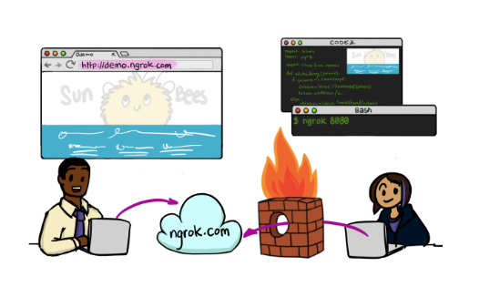
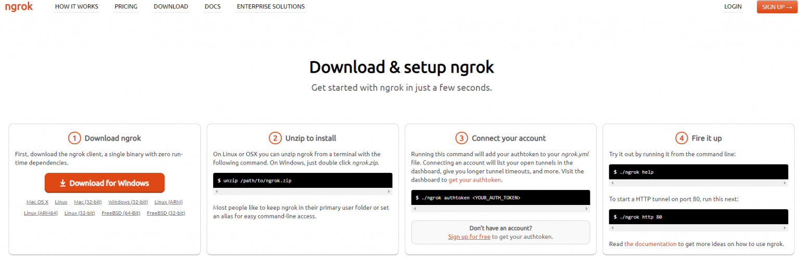
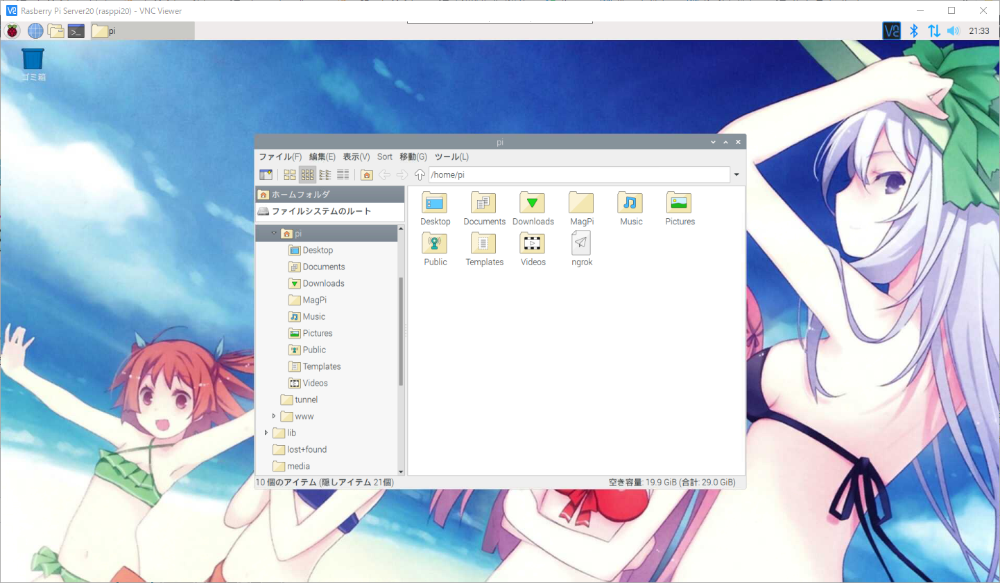
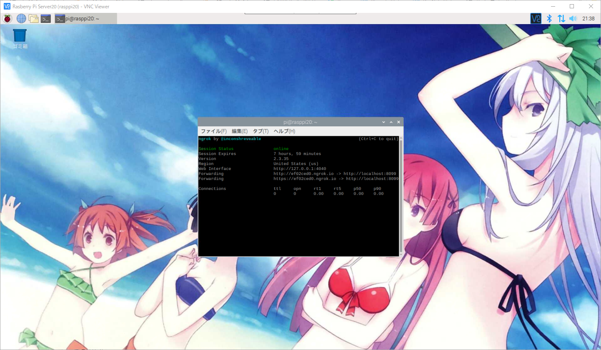
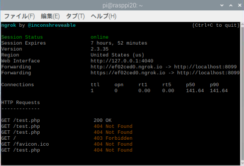
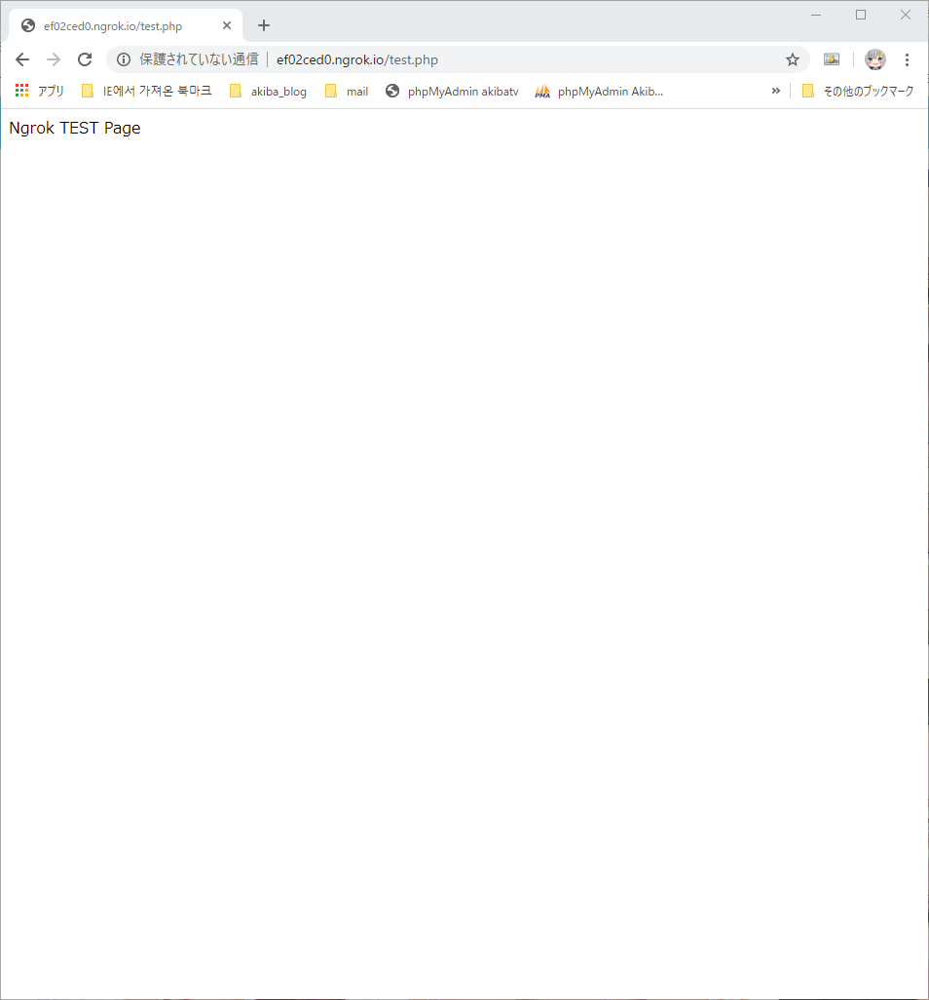

라즈베리파이 ngrok으로 외부에서 로컬서버 접속 환경 구성
라즈베리파이에서 ngrok을 이용한 외부에서 로컬서버 접속환경 구성 방법 입니다.
공식사이트에서 ngrok은 NAT와 방화벽 뒤에 있는 로컬 서버를 안전한 터널을 통해
공개 인터넷에 노출시켜 주는 도구라고 설명되어 있습니다.

프로그램은 아래의 공식사이트에서 다운로드 하실수 있습니다.
다운로드 하신 파일을 라즈베리파이의 임의 폴더에 압축울 푸신고 넣어주시기 바랍니다.

다운로드한 ngrok파일을 라즈베리파이의 임의의 장소에 배치를 해두었습니다.

콘솔창을 실행하신후 ngrok이 위치한 경로까지 이동합니다.
저는 콘솔창이 열리자 마자 ngrok이 나오게 배치를 해두었습니다.
아래의 명령어를 치시면 되겠습니다.
포트번호는 자신이 원하는 포트번호를 입력해 주시면 되겠습니다.
1 | $ ./ngrok http 8099(포트번호는 임의로 지정) |
실행이 되시면 아래와 같이 고유 URL주소를 발급받게 됩니다.
8시간정도마다 랜덤으로 바뀌기때문에 고정주소를 원하시는 분은 유료로 가입하시면 고정으로 유지하실 수 있습니다.
ngrok을 이용해서 URL을 생성하시면 단점은 랜덤주소이지만 장점은 http, https를 모두 사용하실수 있게 됩니다.


발급받은 주소를 이용해서 실제 웹페이지가 표시가 되는지 확인 해보도록 하겠습니다.
저의 라즈베리파이에는 웹서버가 구축이 되어 있는 상태입니다.
웹서버 구축에 대해서는 차후에 게시하도록 하겠습니다.
발급받은 주소로 접속하니 정상적으로 내부의 라즈베리파이의 웹서버로 접속된것을 확인 하실수 있습니다.
